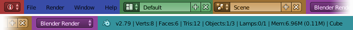

Introduction¶
The Info Editor is found at the top of the Default Screen and has the following components.
Header¶

Info Editor header.
Editor Type Selector (red), Menus (blue), Screen Data-block (green),
Scene Data-block (orange), Engine Selector (purple), Resource Information (aqua).
Controls¶
- Back to Previous
- A button shown when an area is maximized to return to tiled areas.
- Screen
- Data-block menu used to select and edit Screens (window layouts).
- Scene
- Data-block menu to select different Scenes. Having multiple Scenes allows you to work with separate virtual environments, with completely separate data, or with object and/or mesh data linked between them.
- Engine
- Gives a list of selectable render and game engines.
- Render/Baking progress
- A progress bar and a cancel button are shown while rendering or baking. Hovering over them shows a time estimate.
- Capture Stop
- A button shown while screen casting to stop the recording.
- Report Message
- Label for an operator to display results or warnings. It disappears after a short time. By clicking with LMB on the icon on the left side, the full report is copied into a new text data-block, which you can be open in the Text Editor.
- Blender Icon
- Clicking on the Blender logo opens the Splash Screen.
- Blender version
- This label displays the Blender version.
- Resource Information
- Scene
- Displays information about the current loaded scene dependent on the mode and object type. When two numbers are shown, the first one means the selected, and the second one means the total count. This can be the number of vertices, faces, triangles or bones, as well as the selected objects and lamps.
- Memory
- The "Mem" label shows the calculated memory consumption by Blender. This can help to identify, when you are reaching the limits of your hardware.
- Active Object
- The object type of the current selected object.
Report Console¶
When the Info Editor's area is scaled up, it reveals the Report console, where a scripting trail is displayed. Whenever an operator has been executed, it leaves a report, creating a log.

The Report Console after adding a cube.